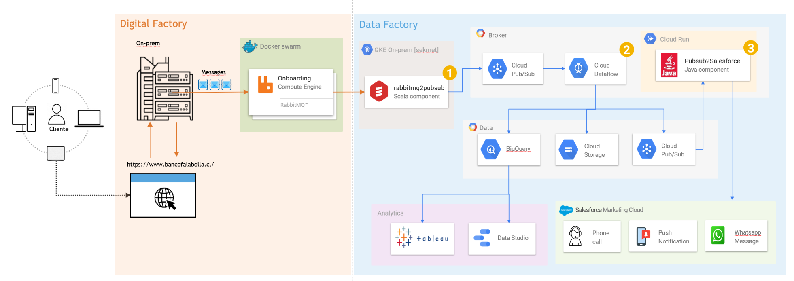

Resumen del Proceso
El proceso de Sesiones de Onboarding (también conocido como Recupero NRT) está diseñado para contactar a clientes que realizan simulaciones para la apertura de nuevos productos financieros como Tarjetas de Crédito CMR, Cuentas Corrientes y Cuentas de Ahorro. Este proceso sigue un flujo de datos estructurado que permite la captación eficiente de leads y su posterior seguimiento.
- Origen de datos: Los usuarios realizan simulaciones en el sitio web o aplicación del banco desde diferentes dispositivos.
- Almacenamiento inicial: Los datos se almacenan en una Cola Rabbit específica para cada país.
- Procesamiento: La Data Factory procesa estos datos enviándolos desde Rabbit hacia Pub/Sub.
- Transformación: Google Cloud Dataflow realiza el procesamiento y transformación de los datos.
- Almacenamiento final: Los datos procesados se envían a Cloud Storage y BigQuery.
- Integración con CRM: Simultáneamente, los datos se envían a un Data Extension en Salesforce.
- Seguimiento: Un Journey en Salesforce evalúa condiciones específicas para enviar notificaciones personalizadas al cliente.
Arquitectura de la Solución
Distribución de Simulaciones por Producto
Tasa de Conversión Mensual
Datos de Simulados (Últimos 7 días)
| ID | Fecha | País | Producto | Dispositivo | Estado |
|---|---|---|---|---|---|
| ONB-2025-4281 | 05/04/2025 | Chile | Tarjeta CMR | Mobile | Contactado |
| ONB-2025-4282 | 05/04/2025 | Perú | Cuenta Corriente | Desktop | Pendiente |
| ONB-2025-4283 | 06/04/2025 | Colombia | Cuenta de Ahorro | Tablet | Convertido |
| ONB-2025-4284 | 06/04/2025 | Chile | Tarjeta CMR | Desktop | Contactado |
| ONB-2025-4285 | 07/04/2025 | Perú | Cuenta de Ahorro | Mobile | Pendiente |